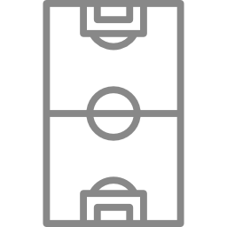

CZY WIESZ ŻE...
W wersji pierwszej wersji Pacmana nie ma możliwość pauzowania gry, ale jest pewna szansa na odpoczynek. Na planszy jset miejsce, do którego możemy dotrzeć, gdy jeszcze żaden duszek nie pojawił się na planszy. Kiedy się tam znajdziemy istnieje duża szansa, że duszki nas nie znajdą.
CZY WIESZ ŻE...
W Chinach wprowadzono zakaz dla osób poniżej 18 roku życia, który kategorycznie zabrania grania powyżej trzech godzin dziennie w gry online. Zakaz ten wprowadzono po wielu zgonach graczy, które były konsekwencją zbyt długiego przesiadywnia przed ekranem monitora.
CZY WIESZ ŻE...
Więźniowie chińskiego obozu pracy w Heilongjiang byli nocami zmuszanie do zdobywania złota w grze World of Warcraft. Złoto to było następnie sprzedawane przez strażniów więzienia za prawdziwe pieniądze.
CZY WIESZ ŻE...
W 2001 roku odbyła się kampania, której celem było zakazanie rozpowszechniania gry Saper. Organizatorzy uznali, że gra może urażać uczucia ofiar pól minowych oraz osób zawodowa usuwających te pola.
CZY WIESZ ŻE...
Pewna firma zajerestrowała w urzędzie napój znany z seri gier Fallout, Nuka Cola, co pozwala im w każdej chwili rozpocząć masową produkcję napoju na skalę światową. Niestety firma zrobiła tylko jedną partię dla kolekcjonerów.
CZY WIESZ ŻE...
Firma Nintendo została stworzona w 1889 roku. Na początku swojego instnienia zajmowała się sprzedażą ręcznie malowanych kart, nazywanych Hafunda. Karty te cieszyły się bardzo dużą popularnością i wkrótce trafiły do Ameryki.
CZY WIESZ ŻE...
Pierwszą maszyną komercyjną arcady był Pong. Maszyna została ustawiona na stacji paliw przez Nolana. Gdy Nolan wrócił po zarobek, okazało się, że maszyna byłe zepsuta. Przyczyną była zbyt duża ilość monet wrzuconych do maszyny.
CZY WIESZ ŻE...

W Chinach początkowo zabroniono sprzedaży gry Football Manager 2005. Powodem zbanowania tytułu było uznanie w nim Tybetu i Tajwanu za niezależne państwa co nie spaodobało się władzą Państwa Środka skazując tym samym grę na wygnanie.